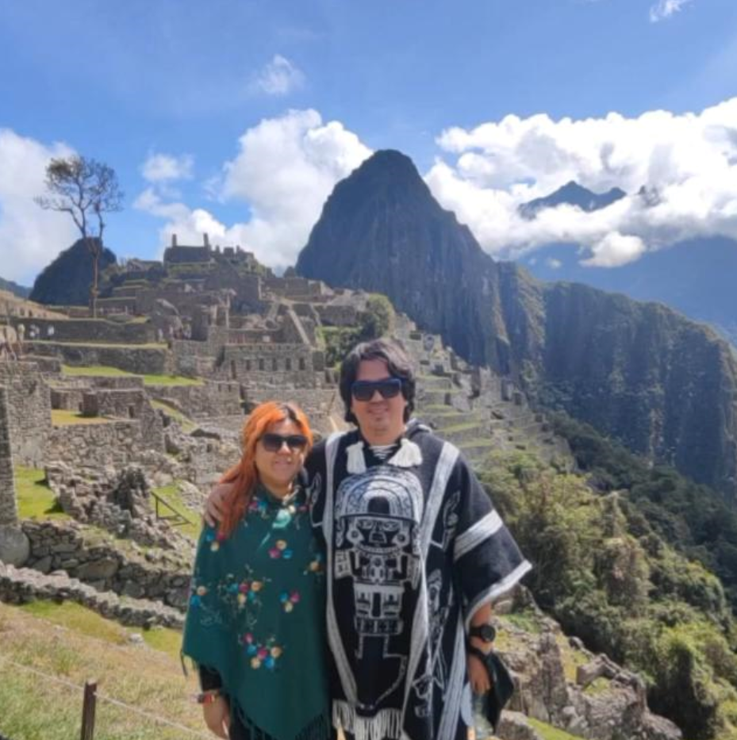
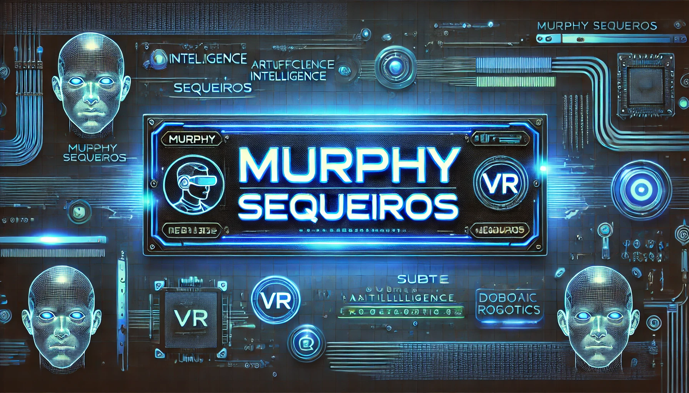

MI BIBLIOGRAFIA
Mi redes sociales
1. Identidad y Relaciones
- Nombre y Apellidos: Murphy Steward Sequeiros Núñez
- Fecha de Nacimiento: 24 de febrero de 1991
- Vida en Arequipa: Nacido y criada en esta ciudad, aunque los primeros años en la ciudad de mollendo, con una fuerte conexión con mi entorno.
- Matrimonio con Pia Carla Gironzina Córdova: Casados desde noviembre de 2024, con una boda civil que incluyó comida, DJ, comediante, música de un tenor y una coreografía especial.
- Mascotas: Dos dóberman hermanos a los que quiere mucho.
- Familia de su esposa: Su esposa perdió a su padre recientemente y no tiene una buena relación con su madre, pero sí con sus hermanos menores.
- Horario de trabajo: De lunes a viernes de 8a.m. a 2.pm. normalmente

2. Educación y Formación
- Medicina en Perú en la Universidad Nacional de San Agustín: Busca siempre mejorar.
- Ingeniería de Software en la Universidad Autónoma del Perú: Actualmente cursando la carrera con un enfoque en desarrollo de software, con meritos.
- Interés en Ingeniería Robótica: Quiere expandir su conocimiento en esta área en el futuro.
- Idiomas: Ingles

3. Intereses y Pasatiempos
- Programación: Se especializa en Python, Kotlin y está aprendiendo TypeScript.
- Desarrollo de software: Le interesa crear aplicaciones interactivas como juegos, calculadoras y bancos de preguntas.
- Fotografía y diseño visual: Le apasiona capturar momentos y experimentar con el diseño.
- DJing: Disfruta mezclar música y crear experiencias sonoras únicas.
- Juegos: Juega Clash Royale, Brawl Stars y Minecraft Realms.
- Cine: Su película favorita es Efecto Mariposa.
- Gastronomía: Le encanta el ceviche.
4. Personalidad y Forma de Aprender
- Motivación y productividad: Se siente motivado cuando llena bases de datos o trabaja en tareas estructuradas y definidas.
- Forma de enfrentar desafíos: Prefiere resolver problemas en el momento y buscar soluciones rápidamente.
- Socialización: Sus amigos y compañeros la describen como alguien a quien le gusta socializar.
- Estrategia de aprendizaje: A veces se aburre con estudios monótonos y prefiere explicaciones sencillas, idealmente con comparaciones divertidas.
5. Proyectos y Aspiraciones
- Desarrollo de videojuegos basados en texto: No le interesa la parte gráfica en 3D, sino la lógica detrás de los juegos.
- Vender páginas web a distintas empresas.
- Exploración de SQL Server para exámenes y certificaciones reconocidas.
- Optimización del tiempo y productividad en su trabajo.
6. Creencias y Opiniones
- Confianza en la tecnología: Siempre ha creído en ChatGPT y ha logrado que su esposa también confíe en él.
- Visión sobre el trabajo: Considera que la falta de supervisión puede afectar su motivación para completar proyectos, aunque es consciente de la importancia de terminarlos.